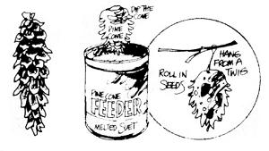
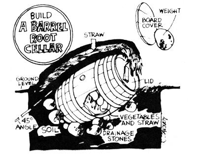
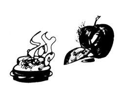
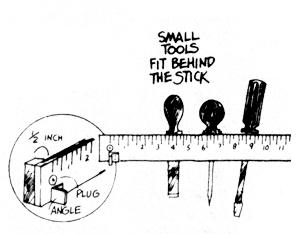

The Mother Earth News......it tells you how Here are a few of THE Mother Earth News(restricted) syndicated features which ahave appeared in 100+ newspapers over the past five years.
Cold weather and snow are on the way for many parts of the country (and have already arrived for some). Time to get the bird feeders ready . . . and here's a very simple one that anybody from grade-schooler to Grandpa can make.
Many root vegetables-such as potatoes, sweet potatoes, beets, turnips, parsnips, radishes, and carrots-may be stored in a simple barrel root cellar for winter and spring use. Set the container at a 45° angle two-thirds of the way into the ground on a few large rocks or bricks (for drainage). Cover the barrel with six inches of dirt, six inches of straw, and a final two inches of dirt. Select firm, sound vegetables and remove excess clinging dirt, but do not wash the produce. Carefully pack the vegetables in straw-layer after layer-9n the barrel and cover the full container with [1] its lid, [2] a foot of straw or leaves, and [3] a board held in place by a large rock. You'll find it easy to open this mini-root cellar and remove the produce inside as needed. If you can't obtain a wooden barrel from hardware stores or lumberyards, a section of culvert drainage tile fitted with plywood ends will work just as well.
Divine inspiration hits us all at one time or other. Mine came after toting 100 pounds of food uphill to our cabin. I was fighting off exhaustion with the thought of the hot apple pie we'd have for supper. But at the top my lady informed me that you can't bake pies on a wood stove without chopping down a half acre of God's own trees for fuel. My depression was hewmongus, and I shuffled downhill for a second load.
Then the Great Spirit came to the rescue, saying, "Country pie freak, despair not, but slice and parboil your softest apples and add brown sugar and cinnamon in the righteous fashion. . . then make light-brown toast . . . slice up strips of goodly cheese, lay them around the perimeter of the toast, dump your apple mix in the center, and cap with another toast . . . then fry in a buttered skillet till the cheese melts and becomes a sealer . . .
Back at the hilltop, I related the vision to my lady who forthwith made it reality. We were fulfilled!
A yardstick is a handy tool to have around any workshop . . . and, if you mount one above your workbench as shown here, you can make it do triple duty.
Screw or nail the piece of wood to the wall with one-half-inch spacers behind it, and the yardstick will serve as an extremely useful rack for screwdrivers, files, awls, and similar equipment. Then, if you set a small center-punched plug of metal directly on the zero point of the scale, you'll have a ready-made "setter" for dividers, compasses, and other scribing instruments. Finally, by attaching a small section of angle bracket below the plug so that its inner face is also right on the scale's zero mark, you'll make it super-easy for you to align items on the yardstick for a quick measurement.
|
 |
 |
 |
|
 |
|
|